10
721 fiches en français pour le niveau 10, prêtes à imprimer et avec corrigé.
721 ressources
Thème

Bruxelles – Compréhension de lecture : texte à trous, écoute et mots mêlés
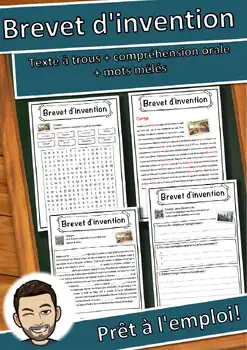
Brevet d'invention – Texte à trous, compréhension orale et mots mêlés

Branchie – Compréhension de lecture : texte à trous, écoute et mots mêlés
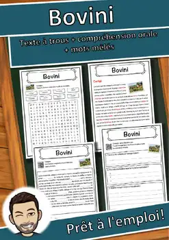
Bovini – Compréhension de lecture : texte à trous, écoute et mots mêlés
Bouleau – Compréhension de lecture : texte à trous, écoute et mots mêlés
Bosnie-Herzégovine – Texte à trous, compréhension orale et mots mêlés
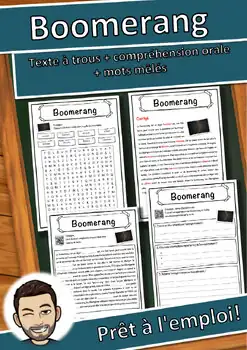
Boomerang – Compréhension de lecture : texte à trous, écoute et mots mêlés
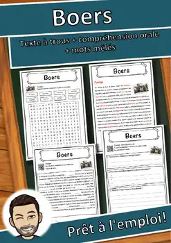
Boers – Compréhension de lecture : texte à trous, écoute et mots mêlés
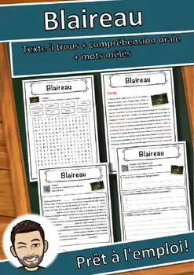
Blaireau – Compréhension de lecture : texte à trous, écoute et mots mêlés
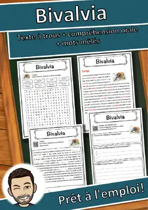
Bivalvia – Compréhension de lecture : texte à trous, écoute et mots mêlés
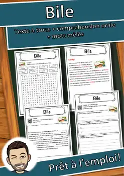
Bile – Compréhension de lecture : texte à trous, écoute et mots mêlés
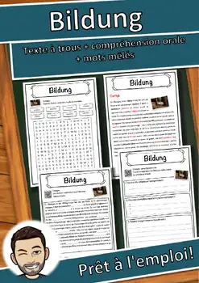
Bildung – Compréhension de lecture : texte à trous, écoute et mots mêlés
Bibliothèque – Compréhension de lecture : texte à trous, écoute et mots mêlés
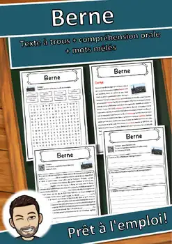
Berne – Compréhension de lecture : texte à trous, écoute et mots mêlés
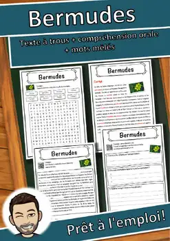
Bermudes – Compréhension de lecture : texte à trous, écoute et mots mêlés

Créteil – Fiche de géographie : texte à trous, compréhension orale et mots mêlés
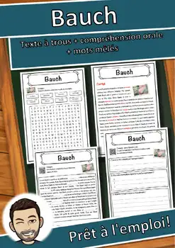
Bauch – Compréhension de lecture : texte à trous, écoute et mots mêlés

Asnières-sur-Seine – Fiche : texte à trous, compréhension orale et mots mêlés
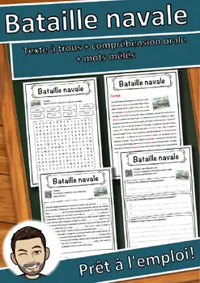
Bataille navale – Compréhension de lecture : texte à trous, écoute et mots mêlés
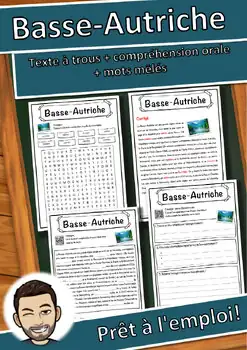
Basse-Autriche – Compréhension de lecture : texte à trous, écoute et mots mêlés
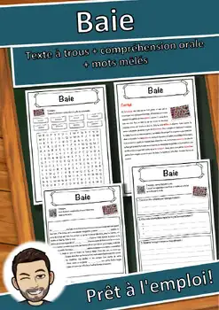
Baie – Compréhension de lecture : texte à trous, écoute et mots mêlés
Bad – Compréhension de lecture : texte à trous, écoute et mots mêlés
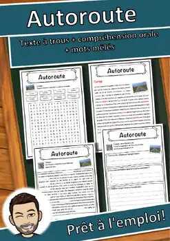
Autoroute – Compréhension de lecture : texte à trous, écoute et mots mêlés
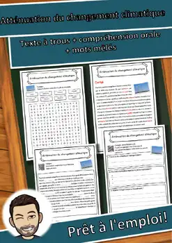
Atténuation du changement climatique – Lecture, écoute et mots mêlés (FLS/FLE)
Arès – Compréhension de lecture : texte à trous, écoute et mots mêlés
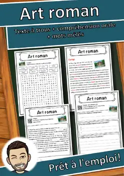
Art roman – Compréhension de lecture : texte à trous, écoute et mots mêlés
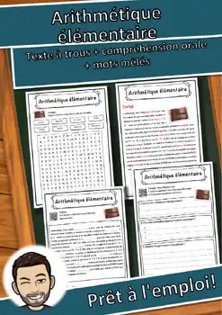
Arithmétique élémentaire – Texte à trous, compréhension orale et mots mêlés
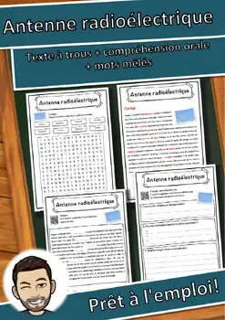
Antenne radioélectrique – Texte à trous, compréhension orale et mots mêlés
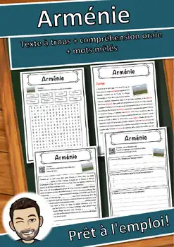
Arménie – Compréhension de lecture : texte à trous, écoute et mots mêlés
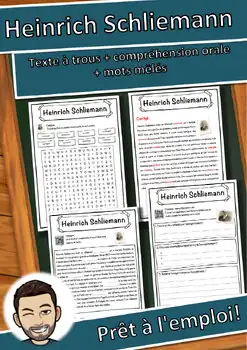
Heinrich Schliemann – Texte à trous, compréhension orale et mots mêlés
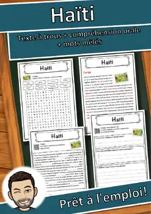
Haïti – Compréhension de lecture : texte à trous, écoute et mots mêlés
Bataille de Normandie – Texte à trous, compréhension orale et mots mêlés

Saint-Paul – Fiche : texte à trous, compréhension orale et mots mêlés
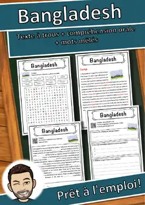
Bangladesh – Compréhension de lecture : texte à trous, écoute et mots mêlés

Grenoble – Fiche : texte à trous, compréhension orale et mots mêlés

Argenteuil – Fiche : texte à trous, compréhension orale et mots mêlés
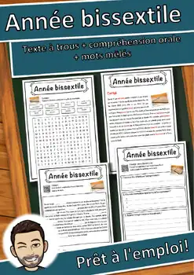
Année bissextile – Texte à trous, compréhension orale et mots mêlés
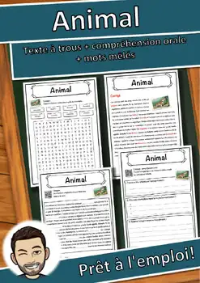
Animal – Compréhension de lecture : texte à trous, écoute et mots mêlés
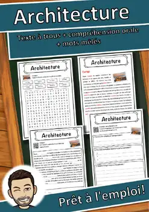
Architecture – Compréhension de lecture : texte à trous, écoute et mots mêlés
Anatinae – Compréhension de lecture : texte à trous, écoute et mots mêlés
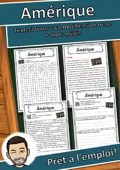
Amérique – Compréhension de lecture : texte à trous, écoute et mots mêlés

Amour – Compréhension de lecture : texte à trous, écoute et mots mêlés

Alphabet – Compréhension de lecture : texte à trous, écoute et mots mêlés

Alpha Ursae Minoris – Texte à trous, compréhension orale et mots mêlés

Allemand – Compréhension de lecture : texte à trous, écoute et mots mêlés

Alaudidae – Compréhension de lecture : texte à trous, écoute et mots mêlés

Air – Compréhension de lecture : texte à trous, écoute et mots mêlés

Aimant – Compréhension de lecture : texte à trous, écoute et mots mêlés
Aucune ressource trouvée – essaie un autre mot ou un autre filtre.